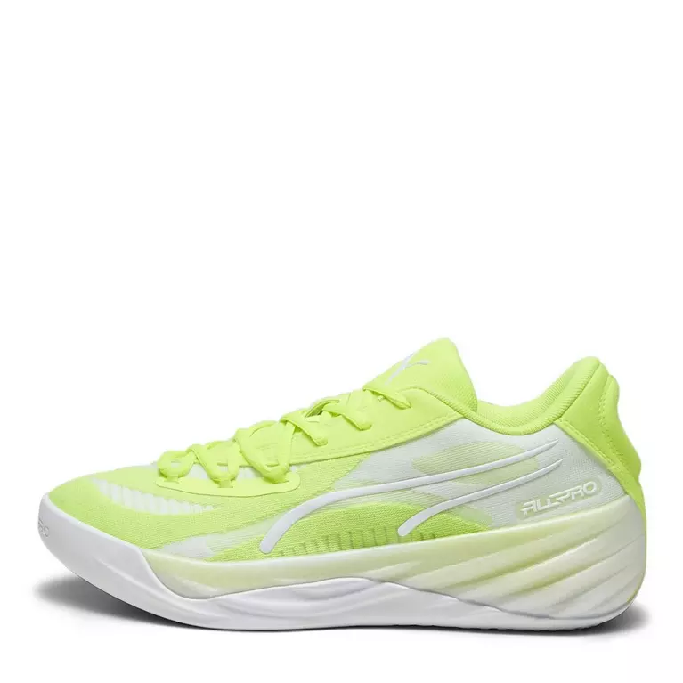
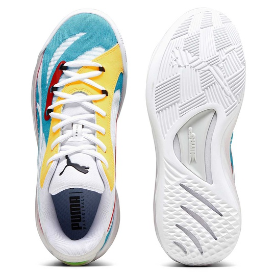
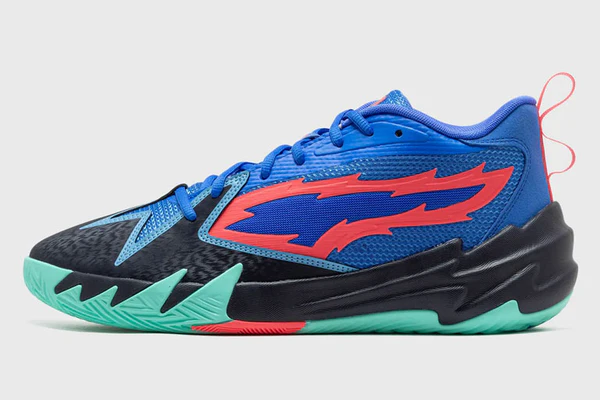

la mb02 est une paire de chaussure que nous proposons sur notre site.
Ces qualités sont:
- La paire de chaussures MB02 est une excellente option pour les joueurs à la recherche de confort.
- La MB02 offre un retour d'énergie satisfaisant grâce à son amorti, mais sans plaque de carbone, elle ne procure
pas la même réactivité ni le dynamisme que les modèles plus performants. Elle reste cependant adaptée pour les
joueurs recherchant un confort sans nécessité de propulsion maximale..
- Le maintien de la cheville de la MB02 est relativement bon, mais il peut ne pas être suffisant pour les joueurs
recherchant un soutien maximal. La chaussure offre un bon maintien latéral et une stabilité décente grâce à son
design, mais elle manque peut-être d'un soutien renforcé autour de la cheville pour les joueurs plus lourds ou
ceux pratiquant des mouvements très intenses.
- L'accroche au sol de la MB02 est bonne, grâce à sa semelle bien conçue qui offre une traction solide sur
différents types de terrain. Elle assure une bonne stabilité et réactivité, bien que les modèles haut de gamme
puissent offrir une accroche légèrement plus précise.


La paire de chaussure all pro nitro est une très bonne option pour les jouers qui
aiments avoir un maximum de confort sur une pair de chaussure.
Ces qualités sont:
- L'amorti de la Puma All Pro Nitro utilise la mousse Nitro Foam pour un excellent retour d'énergie et une
absorption des chocs. Elle offre confort, réactivité et soutien, idéal pour les mouvements rapides. La chaussure
assure également une bonne stabilité pour réduire la fatigue et les risques de blessure.
- La semelle de la Puma All Pro Nitro offre une excellente traction grâce à son design en chevrons, idéal pour les
changements de direction rapides. Fabriquée en caoutchouc durable, elle assure une bonne adhérence et une longue
durée de vie.
- Le maintien de la Puma All Pro Nitro est assuré par un système de laçage ajustable et une tige montante pour un
bon soutien de la cheville. Elle offre également un excellent maintien latéral et une stabilité optimale pendant
le jeu.


La paire de chaussure scoot zero allie style audacieux et performance sur le terrain,
offrant une chaussure de basket légère et réactive.
Ces qualités sont:
- L'amorti de la Puma Scoot Zero offre confort et réactivité, en absorbant les chocs et en offrant un bon soutien
lors des sauts et accélérations. Il réduit l'impact sur les articulations, assurant ainsi une bonne performance
sur le terrain.
- Le grip de la Puma Scoot Zero garantit une excellente adhérence avec sa semelle en caoutchouc et son motif de
traction. Il offre stabilité et contrôle, particulièrement lors des accélérations et des changements de direction,
assurant une performance sécurisée sur le terrain.
- Le maintien de la Puma Scoot Zero offre un excellent soutien, notamment grâce à sa tige haute et son système de
laçage ajustable. Cela garantit une fixation stable du pied, réduisant les risques de torsions ou d'inconfort
pendant les mouvements rapides et les changements de direction.

retour à l'acceuil
Vous pouvez retouver les chaussures Puma ici.